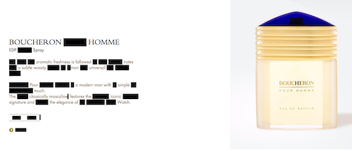
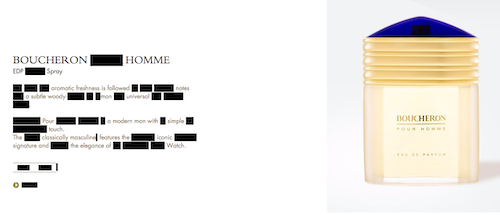
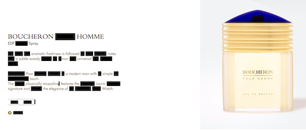

Redact is a bookmarklet that allows you to redact text on any webpage. You can use it however you want but one was people use it is to redact words in an online article t
Drag the link below to your bookmarks bar to use the Redact functionality on any webpage to make new, unexpected word connections and ideas. Sometimes they can make you and a friend laugh.
Redact
